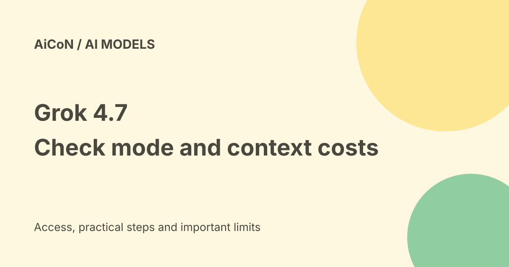

Grok 4.7: API costs, Fast limits and long-context pricing
Grok 4.7 is xAI's model for coding and knowledge work. Current docs list a 500,000-token context window and usage-based API rates. Fast is a separate serving option in Cursor and Grok Build, not a public xAI API model you can select.

What is Grok 4.7?
The vendor describes a model for coding, difficult knowledge work and tool use. Its model page lists text and image input, text output and the Responses API. Reasoning settings are low, medium, high by default, and xhigh.
The announcement's twice-as-fast and half-the-price comparison is xAI's own framing. It does not establish a universal advantage on every task or include tool costs, retries and human review. We did not run independent benchmarks or a billed request.
Standard and long-context rates
| Per million tokens | Short context | Long context |
|---|---|---|
| Input | $2 | $4 |
| Cached input | $0.50 | $1 |
| Output | $6 | $12 |
The pricing table labels long context at 200,000 tokens or more, while explanatory prose says when the prompt exceeds 200,000. At the exact boundary, confirm the billed behaviour rather than assuming the cheaper interpretation. Budget conservatively and keep the exact model identifier grok-4.7.
For base-rate short requests, one million uncached input tokens plus 100,000 output tokens totals $2.60 before tools, retries, taxes or other fees. That is not the cost of a single million-token prompt, which also exceeds the documented context window.
Fast mode rates
Current pricing lists Fast below 200,000 prompt tokens at $4 input, $1 cached input and $12 output per million. Above that threshold it lists $6, $1.50 and $18. That is twice short-context Standard, but 1.5 times the listed long-context Standard rates.
Do not equate Fast with the public API's separate Priority Processing feature. They have different availability and billing mechanics. Read the actual route's terms and inspect the response and bill.
Other charges and region
Tools and other endpoints can have separate charges. The pricing docs say the US regional endpoint adds 10% to token rates. That is a US processing option, not an India data-residency promise. Third-party routers and coding applications can charge through their own plans.
A consumer Grok subscription, Grok Build free tier and xAI API balance are different products. This guide does not establish a free chatbot allowance for Grok 4.7 or an Indian subscription checkout total.
A careful coding comparison
- Choose the exact model, endpoint and mode.
- Use a small permitted project and a clear test suite.
- Leave external actions and deployment disabled during the first run.
- Review code changes, tests and claims that files were edited.
- Count billed tokens, cache use, tools and failed retries.
- Set budget and approval controls before longer autonomous work.
A model checking its own work can still miss errors. Long context is capacity, not proof that all details are understood or that private material is safe to upload.
India and privacy
Check the chosen provider's current account eligibility, data terms and billing before using workplace code. Never include secrets in prompts. Router access does not automatically inherit the same contract or storage terms as a direct API.
Frequently asked questions
Can I call Fast in the public xAI API?
Current docs say no.
Is every request $2/$6?
No. Long context, caching, region and tools change the bill.
Were benchmark claims independently tested?
No.
What changed since the earlier post?
This guide adds cache and long-context rates, restricts Fast to its documented apps and notes the exact-boundary wording difference in official pricing.
Sources: Exact model guide · Official pricing · Vendor announcement. Checked 8 October 2026.